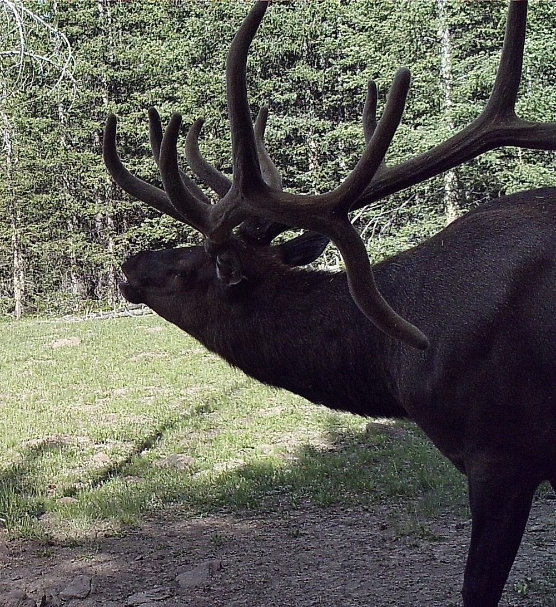
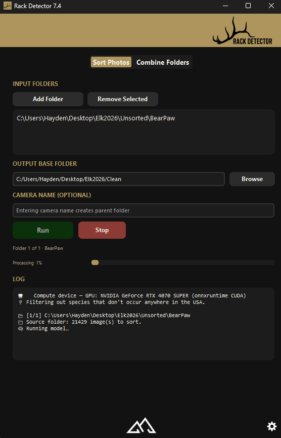
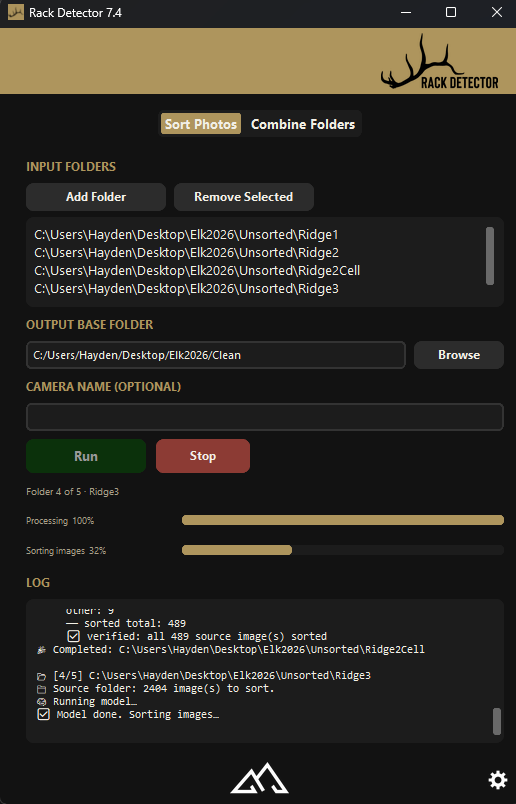
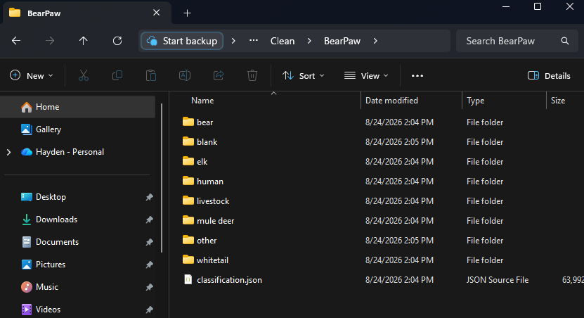
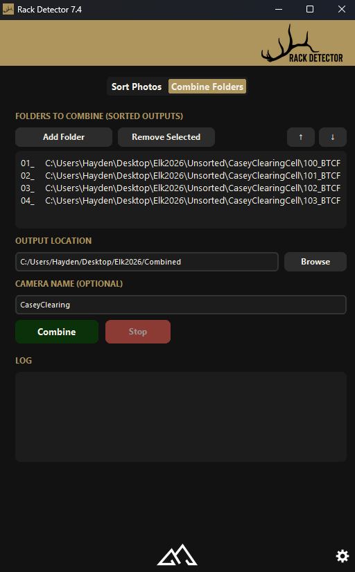

Batch-sort thousands of trail-camera photos into per-species folders — automatically.
On-device AI throws out the blank frames, puts the livestock in a folder of their own, and files everything that is left by species — elk, mule deer, whitetail, bird, bear, mountain lion, human. Fully offline on Windows, and GPU-accelerated for speed.
Free to try — sort up to 10,000 images. Windows 10/11. An NVIDIA GPU is strongly recommended — it runs on CPU-only PCs too, but is much slower. Try the free version to check the speed on your computer first.

Drop in a season's worth of camera cards and let Rack Detector do the sorting — no manual scrubbing, no uploading your photos to the cloud.
Wind, rain and passing shadows trigger most of a card. Every frame with nothing in it goes straight to its own blank folder, so the photos you open are the ones with an animal in them.
Cows, sheep, goats and horses land in their own livestock folder instead of being mixed in with the game. On grazing ground that is the difference between a usable set of photos and an afternoon of scrolling.
What is left is filed per species — elk, mule deer, whitetail, bird, bear, mountain lion, human — with anything that does not belong in North America filtered out on the way.



A season off one camera is rarely a single card. Combine Folders — the app's second tab — merges any number of already-sorted runs into one set of species folders, so the camera ends up with one elk folder instead of four.
Files are prefixed in card order, so a name sort stays chronological and nothing overwrites anything. Each source folder is only removed once it has been checked empty.

Watch Rack Detector sort a batch of trail-camera photos from start to finish.
Try it free, then buy a license when you're ready. No subscription, no cloud fees.
One license activates on one computer, and the app has a built-in request to move it to a new one · no subscription · free updates within this version
NVIDIA GPU strongly recommended — much slower on CPU-only PCs. Non-refundable; the free trial lets you test speed first. See our Terms.
Questions? Email elevationtechnology@outlook.com
Same shop, same approach — your data stays yours, and everything works where the signal doesn't.